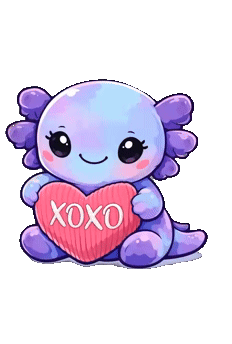
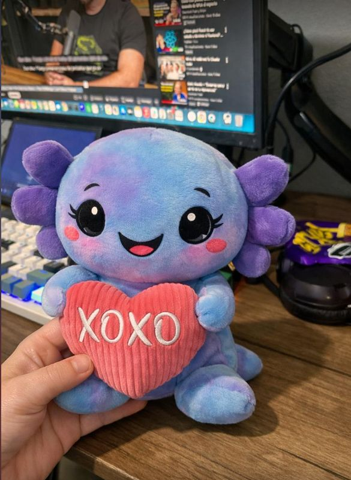

XoxoBot es el asistente virtual de OventLabs. Un axolotl morado digital que vive en agents.oventlabs.net, chatea con GPT-4o, manda emails y agenda citas en Google Calendar con Meet automático. Y tiene peluche.
XoxoBot is the virtual assistant of OventLabs. A purple digital axolotl that lives at agents.oventlabs.net, chats with GPT-4o, sends emails, and schedules appointments in Google Calendar with automatic Meet. And it has a plushie.
Todo empezó con una pregunta simple: ¿cómo hago que los visitantes de mi sitio puedan hablar con alguien… sin que yo esté ahí? La respuesta obvia era un chatbot. La respuesta real fue crear un axolotl con personalidad, herramientas reales y un peluche de la vida real llamado XOXO.
It all started with a simple question: how do I let visitors to my site talk to someone… without me being there? The obvious answer was a chatbot. The real answer was to create an axolotl with personality, real tools, and a real-life plushie named XOXO.
Este post es la historia completa: desde el diseño en ChatGPT hasta el widget en producción. Vamos. 🚀
This post is the full story: from design in ChatGPT to the production widget. Let's go. 🚀

1 El Origen: De Emoji a AvatarThe Origin: From Emoji to Avatar
XoxoBot no nació como un chatbot. Nació como un emoji.
XoxoBot wasn't born as a chatbot. It was born as an emoji.
Cuando estaba diseñando la identidad de OventLabs, quería una mascota que fuera memorable, mexicana y tech-friendly. Los axolotes son endémicos de México, se regeneran (como el buen código después de un refactor), y son adorables. Perfect fit.
When designing OventLabs' identity, I wanted a mascot that was memorable, Mexican, and tech-friendly. Axolotls are endemic to Mexico, they regenerate (like good code after a refactor), and they're adorable. Perfect fit.
La evolución visualThe Visual Evolution
- Diseño con ChatGPT — Le pedí a ChatGPT que generara el diseño original del axolotl morado. Varias iteraciones hasta que quedó el look perfecto: cute, morado-azulado, con esos ojos grandes.
- Design with ChatGPT — I asked ChatGPT to generate the original purple axolotl design. Several iterations until the perfect look: cute, purple-blue, with those big eyes.
- Animación con Grok — Tomé el diseño y se lo pasé a Grok para que lo animara. El resultado: un GIF del axolotl con movimiento, vida propia.
- Animation with Grok — I took the design and passed it to Grok to animate it. The result: a GIF of the axolotl with movement, with a life of its own.
- Background removal con rembg — El GIF tenía fondo, así que usé
rembgpara procesarlo frame por frame. 73 frames, cada uno pasado por el modelo de segmentación de IA. El resultado: un axolotl morado flotando en transparencia pura. - Background removal with rembg — The GIF had a background, so I used
rembgto process it frame by frame. 73 frames, each passed through an AI segmentation model. The result: a purple axolotl floating in pure transparency. - Peluche real XOXO — El 14 de febrero (sí, San Valentín 🥰), mi novia me regaló un peluche de axolotl morado-azulado que sostiene un corazón con "XOXO". Ella lo eligió porque sabía que estaba construyendo al bot y le pareció perfecto. Tiene razón. Desde entonces, XOXO vive en mi escritorio junto al monitor, cuidando que el código compile. Es la mascota oficial de OventLabs.
- Real XOXO Plushie — On February 14th (yes, Valentine's Day 🥰), my girlfriend gave me a purple-blue axolotl plushie holding a heart with "XOXO". She chose it because she knew I was building the bot and thought it was perfect. She's right. Since then, XOXO lives on my desk next to the monitor, watching over the code. It's the official OventLabs mascot.

🧸 Fun fact: El nombre "XoxoBot" viene de XOXO (hugs and kisses) + Bot. Y su emoji oficial es — técnicamente es una medusa, pero si entrecierras los ojos, parece un axolotl. Close enough.
🧸 Fun fact: The name "XoxoBot" comes from XOXO (hugs and kisses) + Bot. And its official emoji is — technically it's a jellyfish, but if you squint, it looks like an axolotl. Close enough.
2 El Cerebro: GPT-4o + Tool CallingThe Brain: GPT-4o + Tool Calling
Un avatar bonito sin cerebro es solo un GIF. XoxoBot necesitaba poder conversar, entender contexto y ejecutar acciones reales.
A pretty avatar without a brain is just a GIF. XoxoBot needed to be able to converse, understand context, and execute real actions.
Tech Stack
- Runtime: Next.js API route (serverless)
- Runtime: Next.js API route (serverless)
- Modelo: GPT-4o vía Copilot API (GitHub Copilot)
- Model: GPT-4o via Copilot API (GitHub Copilot)
- Streaming: SSE (Server-Sent Events) para respuestas en tiempo real
- Streaming: SSE (Server-Sent Events) for real-time responses
- Tool calling: Marker-based — el modelo emite markers especiales que el backend intercepta y ejecuta
- Tool calling: Marker-based — the model emits special markers that the backend intercepts and executes
┌──────────┐ SSE ┌──────────────┐ Copilot API ┌─────────┐
│ Widget │◄────────────▶│ Next.js API │◄─────────────────▶│ GPT-4o │
│ (iframe) │ │ Route │ │ │
└──────────┘ └──────┬───────┘ └─────────┘
│
┌────────────┼────────────┐
│ │ │
┌────▼───┐ ┌────▼───┐ ┌────▼────────┐
│ SendGrid│ │ Google │ │ Google │
│ (email) │ │Calendar│ │ Meet (auto) │
└─────────┘ └────────┘ └─────────────┘Arquitectura de XoxoBot: widget → API → GPT-4o → toolsXoxoBot architecture: widget → API → GPT-4o → tools
Marker-based Tool Calling
En vez de usar el function calling nativo de OpenAI (que requiere un segundo request), implementé un sistema de markers. Cuando GPT-4o quiere ejecutar una acción, emite un marker especial en el stream:
Instead of using OpenAI's native function calling (which requires a second request), I implemented a markers system. When GPT-4o wants to execute an action, it emits a special marker in the stream:
Claro, voy a agendar tu cita 📅
[[TOOL:schedule_meeting|{"date":"2026-02-20","time":"10:00","title":"Demo OventLabs"}]]
¡Listo! Tu cita quedó agendada con Google Meet incluido.El backend detecta el marker [[TOOL:...]], ejecuta la función correspondiente, inyecta el resultado y sigue streameando. Todo en un solo request. Sin round-trips extra. El usuario ve la respuesta fluir en tiempo real.
The backend detects the [[TOOL:...]] marker, executes the corresponding function, injects the result, and keeps streaming. All in a single request. No extra round-trips. The user sees the response flow in real time.
Las herramientasThe Tools
- 💬 Chat con IA — Conversación natural con GPT-4o, contexto de OventLabs, respuestas en español
- 💬 Chat with AI — Natural conversation with GPT-4o, OventLabs context, responses in Spanish
- 📧 Envío de emails — Vía SendGrid. El usuario dice "mándame info a mi@email.com" y XoxoBot lo hace
- 📧 Email sending — Via SendGrid. The user says "send me info to my@email.com" and XoxoBot does it
- 📅 Agendar citas — Crea eventos en Google Calendar con Google Meet automático. El usuario solo dice cuándo quiere reunirse
- 📅 Scheduling appointments — Creates events in Google Calendar with automatic Google Meet. The user just says when they want to meet
3 La Personalidad: No Es Solo un BotThe Personality: It's Not Just a Bot
Cualquiera puede conectar GPT-4o a un widget. Lo que hace diferente a XoxoBot es su personalidad.
Anyone can connect GPT-4o to a widget. What makes XoxoBot different is its personality.
El system prompt de XoxoBot define a un personaje muy específico:
XoxoBot's system prompt defines a very specific character:
- Es un axolotl morado digital — y lo sabe. Hace referencias a axolotes, regeneración y vida acuática
- It's a purple digital axolotl — and it knows it. Makes references to axolotls, regeneration, and aquatic life
- 🤓 Es nerdy pero accesible — puede explicar arquitectura de microservicios o simplemente recomendar un café
- 🤓 It's nerdy but accessible — can explain microservices architecture or simply recommend a coffee
- 😊 Usa emojis con moderación — suficientes para ser friendly, no tantos como para parecer spam
- 😊 Uses emojis with moderation — enough to be friendly, not so many as to feel like spam
- 🇲🇽 Habla español como lengua principal — con toques de inglés técnico cuando aplica
- 🇲🇽 Speaks Spanish as its main language — with touches of technical English when applicable
- 💜 Representa a OventLabs — conoce los servicios, precios, tech stack y puede hablar de proyectos reales
- 💜 Represents OventLabs — knows the services, prices, tech stack and can talk about real projects
💡 La clave del system prompt: No le digo "sé amigable". Le doy contexto, ejemplos y límites. Sabe qué puede hacer (agendar citas), qué no puede hacer (dar precios exactos sin contexto) y cuándo escalar a un humano. Un buen system prompt es como onboarding de un empleado, no una lista de reglas.
💡 The key to the system prompt: I don't tell it "be friendly". I give it context, examples, and limits. It knows what it can do (schedule appointments), what it can't do (give exact prices without context), and when to escalate to a human. A good system prompt is like employee onboarding, not a list of rules.
4 El Widget: Embebible y Mobile-FirstThe Widget: Embeddable and Mobile-First
XoxoBot vive como un widget embebible — un botón flotante que abre un chat. Cualquier sitio puede integrarlo con un <script> tag.
XoxoBot lives as an embeddable widget — a floating button that opens a chat. Any site can integrate it with a <script> tag.
Features del widgetWidget Features
- 📱 Fullscreen en mobile — En pantallas chicas, el chat ocupa toda la pantalla. Nada de modales diminutos
- 📱 Fullscreen on mobile — On small screens, the chat takes up the whole screen. No tiny modals
- 📝 Markdown rendering — Las respuestas de XoxoBot soportan bold, listas, código, links
- 📝 Markdown rendering — XoxoBot's responses support bold, lists, code, links
- ⚡ Quick actions — Botones predefinidos: "¿Qué servicios ofrecen?", "Quiero agendar una demo", "Contactar a un humano"
- ⚡ Quick actions — Predefined buttons: "What services do you offer?", "I want to schedule a demo", "Contact a human"
- 🛡️ Rate limiting — Protección contra spam y abuso de la API
- 🛡️ Rate limiting — Protection against spam and API abuse
- 🎨 Dark theme nativo — Porque los devs no usan light mode
- 🎨 Native dark theme — Because devs don't use light mode
- 💬 Streaming visual — Las palabras aparecen una por una, como si XoxoBot estuviera escribiendo
- 💬 Visual streaming — Words appear one by one, as if XoxoBot were typing
<script> tag y listo.of code to integrate XoxoBot into any site. One <script> tag and done.5 La Pipeline del GIF: 73 Frames de MagiaThe GIF Pipeline: 73 Frames of Magic
Esto merece su propia sección porque fue más trabajo del que esperaba.
This deserves its own section because it was more work than I expected.
El GIF original del axolotl tenía un fondo sólido. Para usarlo como avatar flotante necesitaba transparencia. El problema: GIFs con transparencia + background removal = pesadilla.
The original axolotl GIF had a solid background. To use it as a floating avatar I needed transparency. The problem: GIFs with transparency + background removal = nightmare.
El procesoThe Process
- Extraer frames — Separé el GIF en 73 imágenes PNG individuales
- Extract frames — I split the GIF into 73 individual PNG images
- rembg en cada frame — Usé
rembg(modelo U2-Net) para remover el fondo de cada frame. Batch processing con un script de Python - rembg on each frame — Used
rembg(U2-Net model) to remove the background from each frame. Batch processing with a Python script - Cleanup manual — Algunos frames quedaban con artefactos en las branquias (las partes semi-transparentes del axolotl). Tuve que ajustar thresholds
- Manual cleanup — Some frames had artifacts on the gills (the semi-transparent parts of the axolotl). I had to adjust thresholds
- Reensamblar — Junté los 73 frames de vuelta en un GIF animado con transparencia
- Reassemble — I joined the 73 frames back into an animated GIF with transparency
# El script simplificado
from rembg import remove
from PIL import Image
import glob
for i, frame_path in enumerate(sorted(glob.glob("frames/*.png"))):
img = Image.open(frame_path)
output = remove(img)
output.save(f"clean/{i:03d}.png")¿El resultado? Un axolotl morado flotando en el vacío digital, listo para saludar a los visitantes. Worth it.
The result? A purple axolotl floating in the digital void, ready to greet visitors. Worth it.
6 Lo Que Viene: El RoadmapWhat's Coming: The Roadmap
XoxoBot ya es funcional, pero apenas estamos empezando. Lo que viene:
XoxoBot is already functional, but we're just getting started. What's coming:
- 📊 Google Sheets lead capture — Cada conversación relevante se guarda automáticamente como lead en una hoja de cálculo
- 📊 Google Sheets lead capture — Every relevant conversation is automatically saved as a lead in a spreadsheet
- 💰 Cotizaciones automáticas — Basado en el tipo de proyecto, XoxoBot podrá dar estimados de costo y timeline
- 💰 Automatic quotes — Based on project type, XoxoBot will be able to give cost and timeline estimates
- 🎙️ Voice — Input y output de voz. Hablar con XoxoBot en vez de escribir
- 🎙️ Voice — Voice input and output. Talking to XoxoBot instead of typing
- 📈 Analytics — Dashboard con métricas: conversaciones, conversiones, preguntas frecuentes, satisfaction score
- 📈 Analytics — Dashboard with metrics: conversations, conversions, frequently asked questions, satisfaction score
- 🔗 Más integraciones — Slack, WhatsApp Business, Notion
- 🔗 More integrations — Slack, WhatsApp Business, Notion
🔮 La visión: XoxoBot no es solo un chatbot — es el primer punto de contacto de OventLabs. La idea es que cualquier persona pueda llegar al sitio, hablar con XoxoBot, entender qué hacemos, agendar una demo y recibir una cotización preliminar… todo sin que un humano intervenga. Cuando el humano entra, ya tiene todo el contexto.
🔮 The vision: XoxoBot is not just a chatbot — it's the first point of contact for OventLabs. The idea is that anyone can come to the site, chat with XoxoBot, understand what we do, schedule a demo, and receive a preliminary quote… all without a human intervening. When the human enters, they already have all the context.
TL;DR
- XoxoBot es el asistente virtual de OventLabs — un axolotl morado que chatea con GPT-4o
- XoxoBot is the virtual assistant of OventLabs — a purple axolotl that chats with GPT-4o
- Capabilities: chat con IA, envío de emails (SendGrid), agendar citas en Google Calendar con Meet automático
- Capabilities: AI chat, email sending (SendGrid), scheduling appointments in Google Calendar with automatic Meet
- Tech: Next.js API route + Copilot API (GPT-4o) + SSE streaming + marker-based tool calling
- El avatar pasó de diseño en ChatGPT → animación con Grok → background removal con rembg (73 frames) → peluche real llamado XOXO
- The avatar went from design in ChatGPT → animation with Grok → background removal with rembg (73 frames) → real plushie named XOXO
- El nombre: XOXO (hugs & kisses) + Bot. Emoji oficial:
- The name: XOXO (hugs & kisses) + Bot. Official emoji:
- Widget: embebible, fullscreen mobile, markdown, quick actions, rate limiting
- Widget: embeddable, fullscreen mobile, markdown, quick actions, rate limiting
- Lo que viene: lead capture, cotizaciones, voice, analytics
- What's coming: lead capture, quotes, voice, analytics
- Vive en agents.oventlabs.net — ve a saludarlo 💜
- Lives at agents.oventlabs.net — go say hi 💜